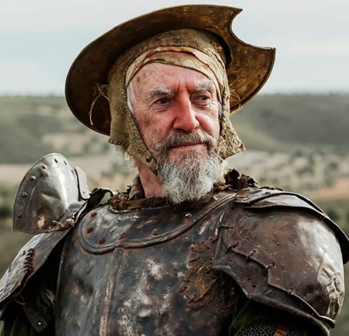
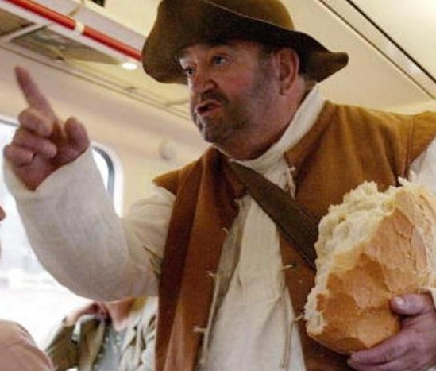
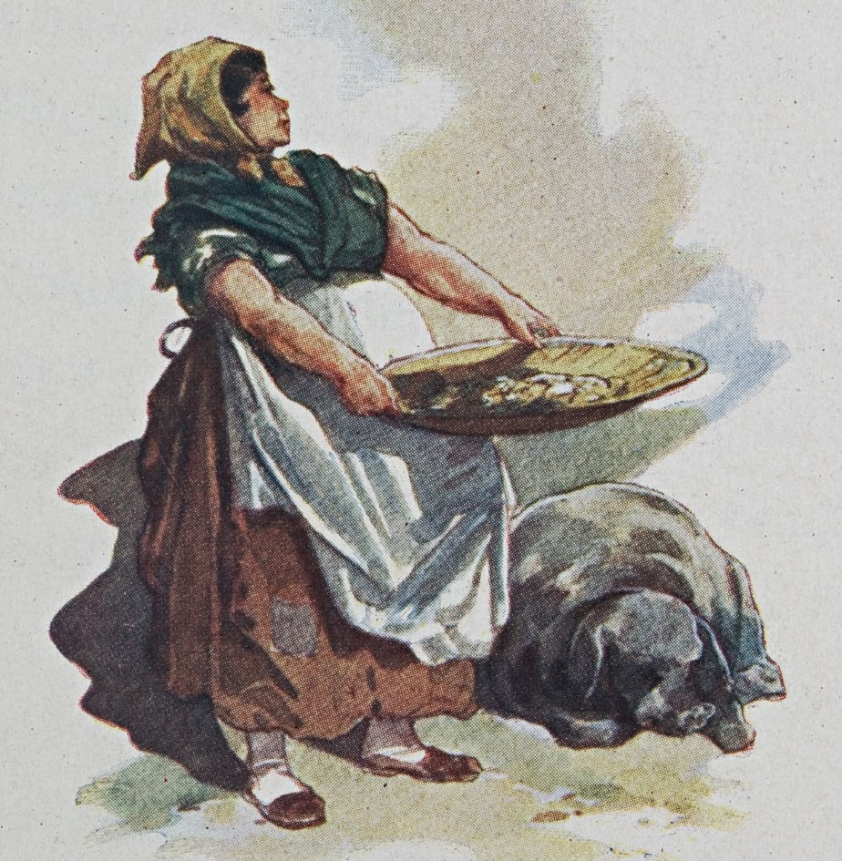
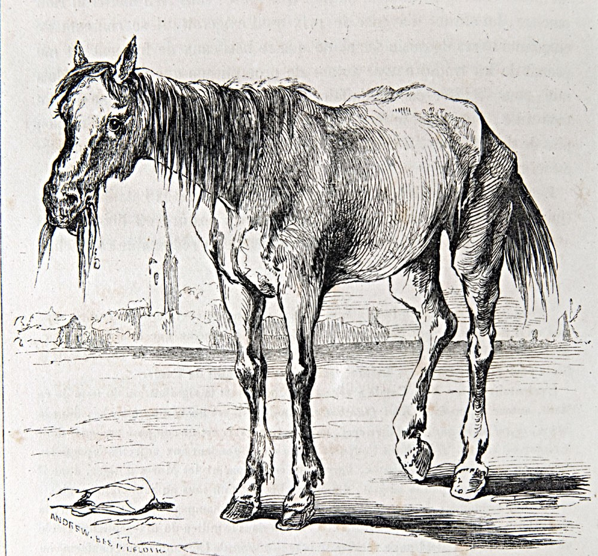
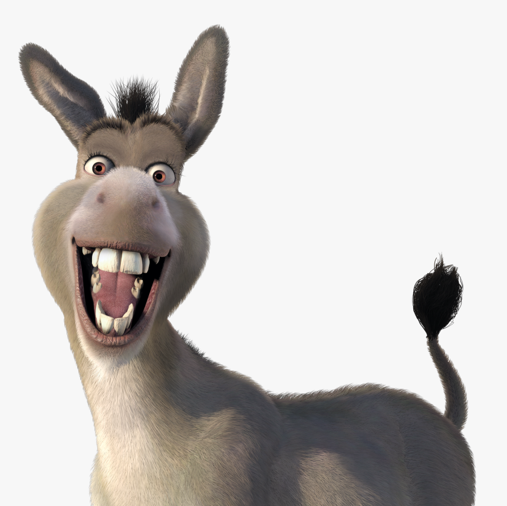

Sanidad
Personajes
Cervantes
Personajes

Este es Don Quijote, el famoso hidalgo que sirve como nuestro personaje principal. Su locura es casi tan famosa como él.

Seguimos con Sancho Panza, el carismático compañero de Don Quijote. Sus ansias por fama y fortuna solo se pueden comparar con su apetito.

Aquí vemos una interpretación de Dulcinea, la amada "princesa" del intrépido hidalgo. Aunque quizás sus descripciones no siempre fueron fieles a la realidad, ella siempre será la dama más querida en el mundo de la literatura.

Obviamente no nos podemos olvidar de Rocinante, el fiel caballo que llevó a Don Quijote a través de España durante todas sus aventuras. No habría un caballero de triste figura sin un caballo de tan similar descripción.

Claro está, si incluimos a Rocinante, también debemos mencionar al burrito que lealmente cargó a Sancho Panza durante todo el libro. Aunque no se le dió nombre propio, aún lo consideramos una parte muy importante de la historia.